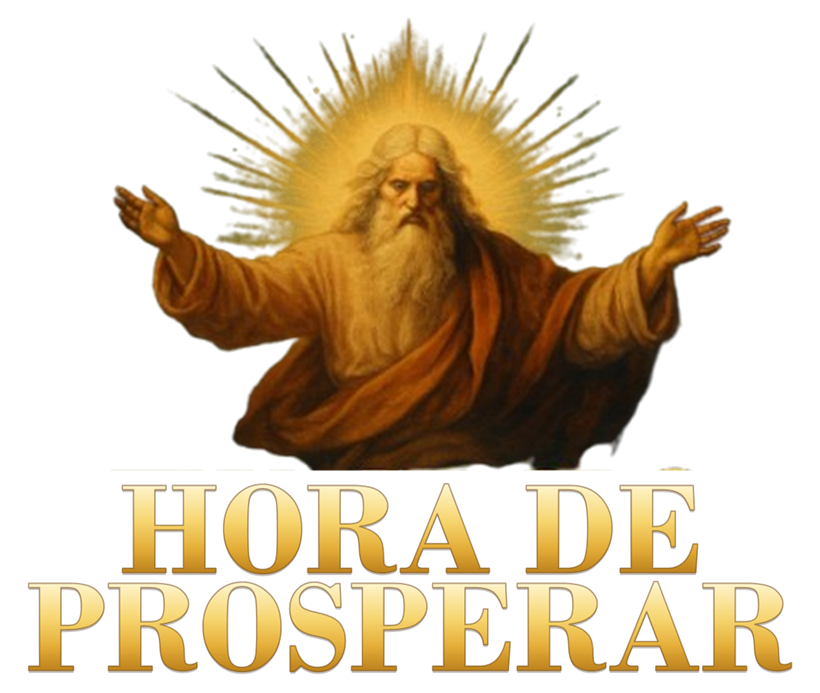

✨
Muito Obrigado!
A sua aliança de fé foi recebida nos céus. O seu Manuscrito Sagrado e o seu acesso ao Portal do Fiel já foram ativados com sucesso!
✦ Aceder ao Meu Portal Sagrado ✦
Também enviamos uma cópia de confirmação para o seu e-mail de compra.
Toque no botão acima para abrir o seu aplicativo sagrado agora mesmo.